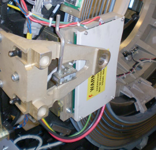

Operating Documentation
Direction 5193574-800, Rev# 22
LightSpeed 7.X Service Methods
Module Version 2.0, Version Date 9/17/09
Operating Documentation |
| Required Persons | Preliminary Reqs | Procedure | Finalization |
|---|---|---|---|
| 1 | Not Applicable | 120 mins | 20 mins |
This procedure defines the necessary steps to replace a brush block assembly.
| Last Revised: | July 17, 2009 |
| Item | Qty | Effectivity | Part# | Manufacturer | |
|---|---|---|---|---|---|
| FE torque wrench kit | 1 | - | 5133203 or equivilent | - | |
| Flat-blade screwdriver | 1 | - | - | - | |
| Flat blade hex drive bit for torque driver | 1 | - | - | - | |
| 4 mm, 5 mm, 10 mm Hex Keys | 1 | - | - | - | |
| Item | Qty | Effectivity | Part# | Manufacturer | |
|---|---|---|---|---|---|
| Slip Ring Brush Block (with brushes) | 1 | - | 5120819 | - | |
| ||||
| Electrocution hazard | ||||
| High Voltages present. | ||||
| Use proper lockout/tagout procedures before replacing components. See safety menu of Service Document gui for appropriate procedures. |
| ||||
| Follow ALL required safety and PPE procedures customary for your organization when working on this product. | ||||
| Condition | Reference | Effectivity |
|---|---|---|
Only trained service personnel should service the GE CT Scanner. | - | - |
Move table to its lowest elevation.
Remove gantry right side cover.
Refer to Replacement → Gantry → Enclosure → (Cover Removal Procedures).
| ||||
| Always turn OFF the HVDC before the 120 VAC. Turning OFF 120 VAC power before HVDC power can result in equipment damage. | ||||
Turn OFF all 3 service switches (Axial Drive, HVDC, 120VAC) on the Service Switch Panel.
| ||||
| Electrocution hazard | ||||
| High Voltage present. | ||||
| Use proper lockout/tagout procedures before replacing components. See safety menu of Service Document gui for appropriate procedures. |
Perform Lockout Tagout for system power (A1 disconnect) prior to replacing this component.
Remove the gantry left side cover, top covers and rear cover.
Remove Rear Gantry cover support bracket that is over top of the Brush Block assembly.
Illustration 1: Slip Ring Brush Block

Remove Slip Ring safety covers.
Remove brush block safety cover (4 screws with 4 mm hex wrench)
Disconnect all connections to Brush block (see Illustration 2).
Illustration 2: Slipring Brush Block Assembly

| ||||
| Do not touch brushes with your fingers. Transfer of carbon dust can occur which can then be spread to other components touched. | ||||
Remove four (4) 6 mm cap screws that secure brush block assembly to gantry.
Carefully remove brush block.
| NOTE: | New brush tips are supplied with the brush block. Do not reuse old brushes. |
Clean the slip ring prior to installing the new brush block and brushes. Use the PM Procedure for cleaning the slip ring.
Install the new brush block and secure with the four (4) 6 mm cap screws. Do not tighten yet.
Push the brush block against the position adjustment set screws in the mounting bracket.
Using a flashlight, look into the top and bottom High Voltage brush locations on the inner HV ring (inside edge of slip ring furthest from brush block mounts). Verify the brush block position is adjusted so the brushes ride in the center of their tracks. Adjust the brush-block setscrews if necessary to center the brush on the slip ring track.
The examples below show a good and bad brush block alignment. In the good example, the slip ring track is centered in the brush holder. In the example of a bad alignment, the edge of the slip ring track can be seen on the right side only.
Illustration 3: Good Brush Alignment Example

Illustration 4: Bad Brush Alignment example

Torque the four (4) 6 mm cap screws to:
Table 1: Brush Block Mount Screws
| 7.9 N-m | 5.8 lb-ft | 70 lb-in | 80 kg-cm |
| ||||
| Brush Contamination Possible. Do not touch brushes with your fingers. The skin oils will contaminate the brush and reduce usable life and potentially create future failures. | ||||
Install the new brushes supplied with the new brush block as torque as shown below.
Illustration 5: Brush Block Torque

Table 2: Power brush torque
| 1.5 N-m | NA lb-ft | 13 lb-in | 15 kg-cm |
Table 3: Signal brush torque
| 0.3 N-m | NA lb-ft | 3 lb-in | 3 kg-cm |
Reassemble gantry.
Install power lines to brush block per cable labels.
Install brush block cover and slip ring covers.
Install gantry cover mount over top of brush block.
Install Gantry covers and restore power to system.
Restore power to the system. Verify proper operation by running verification scans. Verification procedure should consist of:
From the Common Service desktop, Diagnostics tab, run the Axial Functional Test, rotating the gantry for 600 seconds to set the new brushes. Exit axial functional when done.
Run 5 stationary and 5 rotational scans with x-ray. The technique is not important. It is important to exit the exam, because this triggers the “DIP Stats” update.
From the Common Service Desktop, Diagnostics tab, select RTS viewer
Choose the DIP selection and view each scans DIP stats. There should be no FEC Failures or Sync Errors. See below for example portion of stats.
Exam Number:00263,ENDEXAM
Date :Fri Mar 21 02:05:33 2008
Offset Data Bytes 0 Bytes
Image Data Bytes 0 Bytes
Number of Das Data Buffer Overruns 0 Overruns
abort 0 Aborts
FEC Attempts 0 Bytes
Bit Error Rate 0.0 Rate
FEC Failures 0 Failures
Num of SYNC Errors 0 Errors
View interpolations 0 Interpolations
Select the TGP and ORP low speed stats and verify zero disconnects, see below for example portion of ORP stats.
ORP Low Speed Com Stats Exam Number:00713,ENDEXAM Date :Fri Sep 26 09:52:40 2008 Short_Brush_Disconnect 0 < 200ns Medium_Brush_Disconnects 0 < 100us Long_Brush_Disconnects 0 > 100us
Perform a [System Scanning Test] from the [Functional Checks] menu of the service manual.